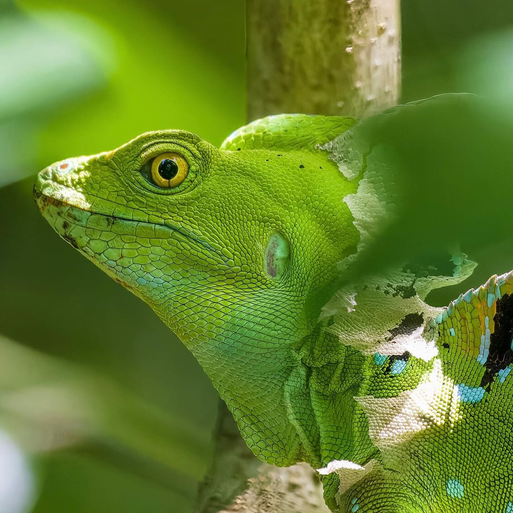
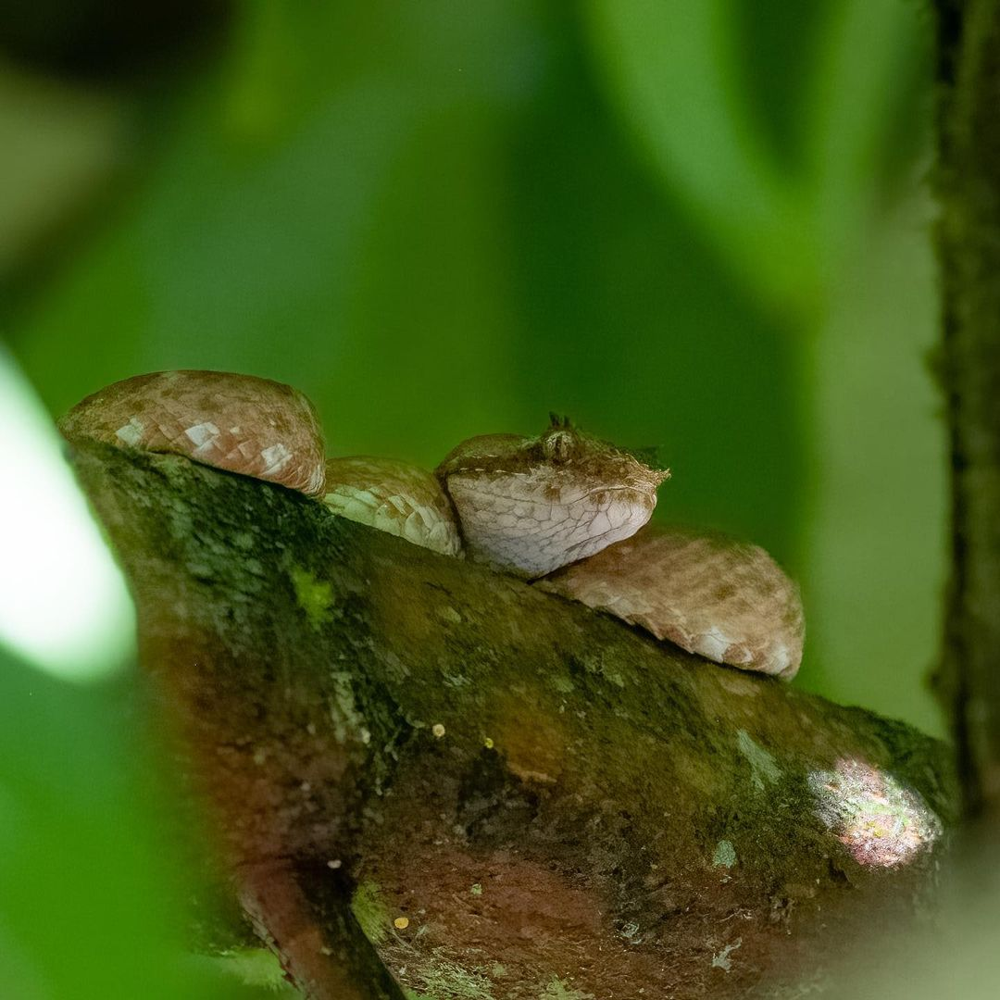

The Emerald Basilisk, a beautiful reptile that can be found along the jungle in Central America. Beautiful and bright colors makes this basilisk a must to see.
Shot on Nikon D850 + Nikon 24-120mm
Just like kids, a Capuchin monkey plays around trying to keep the attention.
Shot on Nikon D850 + Nikon 24-120mm
Sloths are very well known for their calm and quite movements. A life without the rush we know.
Shot on Nikon D850 + Nikon 24-120mm
The beautiful Scarlet Macaw (Ara macao), a quite large bird more commonly found in the Pacific coast. They live to feed on almonds, looking for them upon the trees. The exploitation of this bird in the pet trade has made the efforts for conservation to be harder sometimes, how ever, Costa Rica has made amazing programs to keep this specie thriving in the jungle
Shot on Nikon D850 + Nikon 24-120mm

Well hidden up in the trees or close to to ground, where small birds goes to eat.
Bocaracá, a deadly but beautiful viper. A set of modified scales that looks like eyelashes, gives it’s common name “Eyelash viper”.
Shot on Nikon D850 + Nikon 24-120mm
Black-cheeked woodpecker.Early in the morning, these little friend decided to play around the palm trees near by.
Shot on Nikon D850 + Nikon 24-120mm
Three-toed sloth.One of the most iconic species of mammals that can be found in Costa Rica.
Shot on Nikon D850 + Nikon 24-120mm